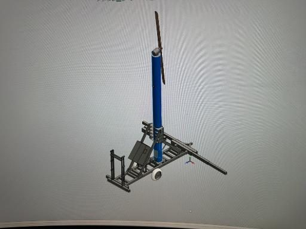
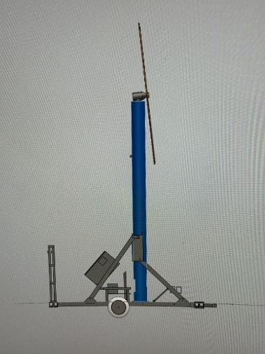
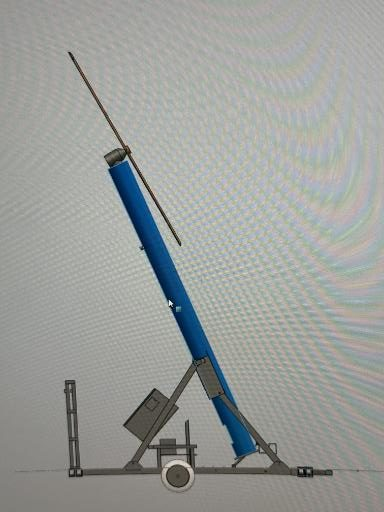
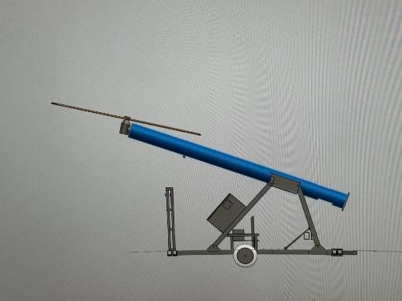
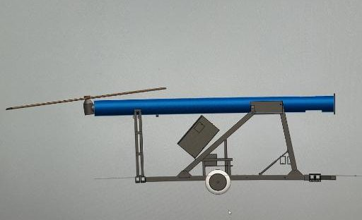

“Next-Gen Engineering, Next-Level Protection”
Source: HFH Baby Chinook V2.pptx (supplied by H.F. Hauff, Oct 2026), slides 5–6. The 150 hp value is a blade specification as supplied, not an engine rating.
H.F. Hauff engineering: the tower, blade and braced base come together in a machine for low crops.
Source: HFH Baby Chinook V2.pptx (supplied by H.F. Hauff, Oct 2026), slide 6.

Design images of the new tower. These are design photographs, not certified engineering drawings.




Source: HFH Baby Chinook V2.pptx (supplied by H.F. Hauff, Oct 2026), slides 1–4.